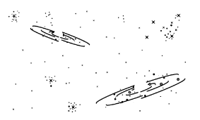

Alan Guth was one of the first physicists to hypothesize the existence of inflation,
which explains how the universe expanded so uniformly and so quickly in the instant
after the Big Bang 13.8 billion years ago. Rick Friedman for The New York Time
CAMBRIDGE, Mass. — One night late in 1979, an itinerant young physicist named Alan Guth,
with a new son and a year’s appointment at Stanford, stayed up late with his notebook and equations,
venturing far beyond the world of known physics.
He was trying to understand why there was no trace of some exotic particles that
should have been created in the Big Bang. Instead he discovered what might have
made the universe bang to begin with. A potential hitch in the presumed course of cosmic
evolution could have infused space itself with a special energy that exerted a repulsive force,
causing the universe to swell faster than the speed of light for a prodigiously violent instant.
If true, the rapid engorgement would solve paradoxes like why
the heavens look uniform from pole to pole and not like a jagged, warped mess.
The enormous ballooning would iron out all the wrinkles and irregularities.
Those particles were not missing, but would be diluted beyond detection, like spit in the ocean.
Reaching back across 13.8 billion years to the first sliver of cosmic time
with telescopes at the South Pole, a team of astronomers led by John M. Kovac of the Harvard-Smithsonian
Center for
Astrophysics detected ripples in the fabric of space-time —
so-called gravitational waves — the signature of a universe being wrenched
violently apart when it was roughly a trillionth of a trillionth of a trillionth
of a second old. They are the long-sought smoking-gun evidence of inflation, proof,
Dr. Kovac and his colleagues say, that Dr. Guth was correct.
If corroborated, Dr. Kovac’s work will stand as a landmark in science comparable
to the recent discovery of dark energy pushing the universe apart, or of the Big Bang itself.
It would open vast realms of time and space and energy to science and speculation.
Dr. Kovac and his collaborators, working in an experiment known as Bicep, for Background
Imaging of Cosmic Extragalactic Polarization, reported their results in a scientific
briefing at the Center for Astrophysics here on Monday and in a set of papers
submitted to The Astrophysical Journal.
Dr. Kovac and his collaborators, working in an experiment known as Bicep, for Background
Imaging of Cosmic Extragalactic Polarization, reported their results in a scientific
briefing at the Center for Astrophysics here on Monday and in a set of papers
submitted to The Astrophysical Journal.
Dr. Kovac and his collaborators, working in an experiment known as Bicep, for Background
Imaging of Cosmic Extragalactic Polarization, reported their results in a scientific
briefing at the Center for Astrophysics here on Monday and in a set of papers
submitted to The Astrophysical Journal.

THE UNIVERSE is just under 14 billion years old. From our position in the Milky
Way galaxy, we can observe a sphere that is now about 92 billion light-years across. But there's a
mystery. Wherever we look, the universe has an even temperature.
NOT ENOUGH TIME The universe is not old enough for light to have traveled the
vast distance from one side of the universe to the other,
and there has not been enough time for scattered patches of hot and cold to mix into an even
temperature.
DISTANT COFFEE At a smaller scale, imagine using a telescope to look a mile in one
direction. You see a coffee cup, and from the amount of steam, you can estimate its temperature and
how much it has cooled
COFFEE EVERYWHERE Now turn around and look a mile in the other direction. You see
a similar coffee cup, at exactly the same temperature. Coincidence? Maybe. But if you see a similar
cup in every direction, you might want to look for another explanation.
STILL NOT ENOUGH TIME There has not been enough time to carry coffee cups from
place to place before they get cold. But if all the coffee cups were somehow filled from a single
coffee pot, all at the same time, that might explain their even temperature.
INFLATION solves this problem. The theory proposes that, less than a trillionth of
a second after the Big Bang, the universe expanded faster than the speed of light. Tiny ripples in
the violently expanding energy field eventually grew into the large-scale structures of the
universe.
FLUCTUATION Astronomers have now detected evidence of these ancient fluctuations
in swirls of polarized light in the cosmic background radiation, which is energy left over from the
early universe. These are gravitational waves predicted by Einstein.
EXPANSION Returning to our coffee, imagine a single, central pot expanding faster
than light and cooling to an even temperature as it expands. That is something like inflation. And
the structure of the universe mirrors the froth and foam of the original pot.
By LARRY BUCHANAN and JONATHAN CORUM
Dr. Kovac said the chance that the results were a fluke was only one in 10 million.
The results are the closely guarded distillation of three years’ worth of observations and analysis.
Eschewing email for fear of a leak, Dr. Kovac personally delivered drafts of his work to a select few,
meeting with Dr. Guth, who is now a professor at Massachusetts Institute of Technology (as is his son,
Larry, who was sleeping that night in 1979), in his office last week
Andrei Linde of Stanford, a prolific theorist who first described the most popular variant of inflation,
known as chaotic inflation, in 1983, was about to go on vacation in the Caribbean last week when Chao-Lin
Kuo, a Stanford colleague and a member of Dr. Kovac’s team, knocked on his door with a bottle of Champagne
to tell him the news.
Stanford Professor Andrei Linde celebrates physics breakthrough Video by
StanfordUniversity
Confused, Dr. Linde called out to his wife, asking if she had ordered anything.
By last weekend, as social media was buzzing with rumors that inflation had been seen and news spread,
astrophysicists responded with a mixture of jubilation and caution.
The Bicep2 telescope, in the foreground, was used to detect the faint spiraling gravity
patterns — the signature of a universe being wrenched violently apart at its birth. Steffen Richter/Associated Press
Make that free lunches. Most of the hundred or so models resulting from Dr. Guth’s original vision suggest
that inflation, once started, is eternal. Even as our own universe settled down to a comfortable homey
expansion, the rest of the cosmos will continue blowing up, spinning off other bubbles endlessly, a concept
known as the multiverse.
“If you trace your cosmic roots,” said Abraham Loeb, a Harvard-Smithsonian astronomer who was not part of
the team, “you wind up at inflation.”
A version of this article appears in print on March 18, 2014, Section A, Page 1 of the
New York edition with the headline: Space Ripples Reveal Big Bang’s Smoking Gun. Order
Reprints | Today’s Paper | Subscribe